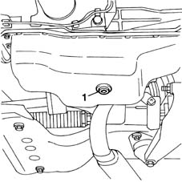
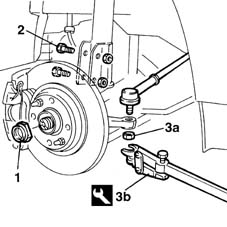
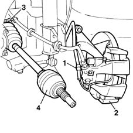
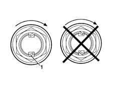
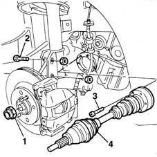

2710A10 drive shaft with joints (one), l/h or r/h - r + r
- Path
- Procedures > 27 AXLE > 2710 FRONT AXLE > 2710A drive shafts and joints > 2710A10 drive shaft with joints (one), l/h or r/h - r + r
- Kind
- repair procedure (removal / refitting; the operation number is the code)
- Applies to
- all engines; all production periods
- Interactive page
- https://sloeber94.github.io/elrnDB-fMltpl/en/#/2891559
Applies to: engines: 1.6 16v; all production periods
 Removing
Removing
 Refitting
RefittingPlace the car on a lift.
4450B10 Front WHEEL (one) - R.R.
Raise the ramp.
Place a suitable bowl under the car to collect the gearbox oil.
1. Undo the plug on the gearbox and drain the gearbox oil.

Applies to: engines: 1.6 16v; all production periods
1. Using a hammer and suitable chisel, relieve the staking on and undo the nut securing the wheel hub.
Use a 36 mm diameter socket appropriately machined so that it fits tightly on the entire surface of the nut.
2. Undo the bolts securing the shock absorber strut.
3. Undo the nut (3a) and using the tool (3b), remove the steering balljoint head from the vertical link.
 | Name | Country |
|---|---|---|
3b | Head extractor | 1.847.035.000 |

Applies to: engines: 1.6 16v; all production periods
1. Disconnect the electrical connection of the brake pad wear warning light.
2. Tilt the brake disc/wheel hub assembly downwards.
Disengage and withdraw the drive shaft from the hub.
3. Open the clip securing the drive shaft to the differential.
4. Remove the drive shaft complete with constant velocity joint and tripod joint.

Applies to: engines: 1.6 16v; all production periods
Refitting
RemovingCheck the drive shaft for damage.
Check that the gaiters are not damaged and that they contain lubricating grease.
Engage the tripod joint on the differential.
Lock the drive shaft on the flange using a new clip.
Engage the constant velocity joint on the wheel hub.
Refit the brake disc/wheel hub assembly in its seating.
Tighten the bolts securing the shock absorber strut to the specified torque.
 | Fastening | Component | Ø | Value (daNm) |
|---|---|---|---|---|
- | Nut | FRONT HUB STEERING KNUCKLE. | M10 | 7 |
Fit the steering tie-rod end in its seating.
Tighten the nut to the specified torque.
| Fastening | Component | Ø | Value (daNm) |
|---|---|---|---|---|
- | Nut | ADJUSTABLE STEERING LINKS | M10 | 4 |
Connect the brake pad wear warning light connection.
Tighten the wheel hub nut.
| Fastening | Component | Ø | Value (daNm) |
|---|---|---|---|---|
- | Nut | FRONT HUB STEERING KNUCKLE. | M24 | 7 + 62° |
1. Stake the nut in accordance with the illustration below.

Applies to: engines: 1.6 16v; all production periods
Replace the oil drain plug seal.
Screw on the gearbox oil plug and tighten it to the specified torque.
Insert oil into the gearbox.
Check the oil level.
4450B10 Front WHEEL (one) - R.R. .
Remove the vehicle from the ramp.
Applies to: engines: 1.9 JTD 8V; all production periods
Removing
Refitting4450B10 Front WHEEL (one) - R.R.
7055B42 Additional FRONT WHEEL ARCH (one), left or right - R.R.
1. Relieve the staking on the nut securing the drive shaft to the wheel hub, then unscrew it.
2. Undo the bolts securing the vertical link to the suspension.
Move the drive shaft constant velocity joint away from the wheel hub.
3. Undo the bolts fixing the drive shaft to the intermediate shaft.
4. Remove the drive shaft from the car.

Applies to: engines: 1.9 JTD 8V; all production periods
Refitting
RemovingFit the drive shaft in its seat in the car.
Tighten the bolts securing the drive shaft to the intermediate shaft.
| Fastening | Component | Ø | Value (daNm) |
|---|---|---|---|---|
- | Bolt | FRONT DRIVE SHAFT COMPLETE WITH JOINTS | M8 | 4 |
Fit the constant velocity joint onto the wheel hub.
Tighten the bolts securing the suspension vertical link to the shock absorber to the specified torque.
| Fastening | Component | Ø | Value (daNm) |
|---|---|---|---|---|
- | Nut | FRONT HUB STEERING KNUCKLE. | M10 | 7 |
Tighten the nut securing the hub to the steering knuckle to torque.
| Fastening | Component | Ø | Value (daNm) |
|---|---|---|---|---|
- | Nut | FRONT HUB STEERING KNUCKLE. | M24 | 7 + 62° |
1. Using a hammer and chisel, stake the nut securing the drive shaft to the wheel hub, working as shown in the figure.
Applies to: engines: 1.9 JTD 8V; all production periods
7055B42 Additional FRONT WHEEL ARCH (one), left or right - R.R.